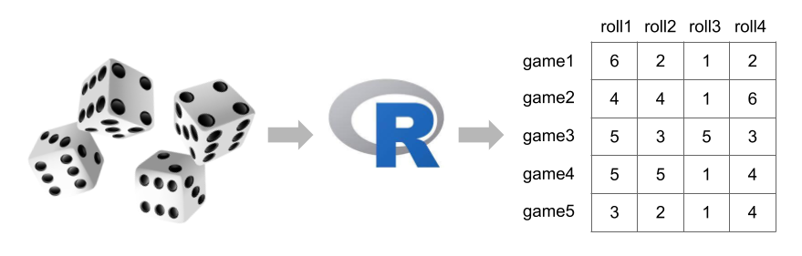

Rolling Dice with R
Exploring Simulations in Games of Chance with R
1st Edition: November 2022
2nd Edition: December 2023
About

In this manuscript I describe a couple of examples for implementing simulations of games of chance in R.
About You
I am assuming that you have some experience working with R. I’m also assuming that you have both R or RStudio installed in your computer. If this is not the case, you can take a look at Breaking the Ice with R
Citation
You can cite this work as:
Sanchez, G. (2022) Rolling Dice with R: Exploring Simulations in Games of Chance with R.
https://www.gastonsanchez.com/R-rolling-dice
My Series of R Tutorials
This document is part of a series of texts that I’ve written about Programming and Data Analysis in R:
Breaking the Ice with R: Getting Started with R and RStudio
https://www.gastonsanchez.com/R-ice-breakerTidy Hurricanes: Analyzing Tropical Storms with Tidyverse Tools
https://www.gastonsanchez.com/R-tidy-hurricanesR Coding Basics: An Introduction to the Basics of Coding in R
https://www.gastonsanchez.com/R-coding-basicsRolling Dice: Exploring Simulations in Games of Chance with R
https://www.gastonsanchez.com/R-rolling-diceR for Strings: Handling Strings with R
https://www.gastonsanchez.com/R-for-stringsWeb Technologies in R: A Short Introduction to Web Technologies in R
https://www.gastonsanchez.com/R-web-technologies
Donation
As a Data Science and Statistics educator, I love to share the work I do. Each month I spend dozens of hours curating learning materials like this resource. If you find any value and usefulness in it, please consider making a one-time donation—via paypal—in any amount (e.g. the amount you would spend inviting me a cup of coffee or any other drink). Your support really matters.

License

This work is licensed under a Creative Commons Attribution-NonCommercial-ShareAlike 4.0 International License.